Project Overview
This project focuses on using algorithm aligning the three color channels (red, green, blue) from Sergei Prokudin-Gorskii's monochromatic glass plate images (captured in early 20th century through special camera that take three exposures through each of the red, green, and blue filters ) to recreate the original colored photographs. The challenge is to test out and compare different algorithm, to see which one resutled the best alignment across all images.
Metrics
To solve the alignment problem, I implemented and compared three different metrics:
- L1 (Sum of Absolute Differences) - Measures the sum of absolute differences between pixel values
- L2 (Sum of Squared Differences) - Measures the sum of squared differences between pixel values
- Edge SSD (Sum of Squared Differences for Edge Magnitude) - Measures the sum of squared differences between gradient magnitude (calculated using Sobel filters)
For each image, the blue channel was used as the reference, and the program aligns the green and red channels to it by searching for offsets that minimized the chosen metric within a specified search range (15 pixels). A image pyramid approach was used to handle larger displacements efficiently.
After alignment, images were cropped to remove borders resulted by the alignment process, and the aligned channels are stacked together to create the final RGB
L2 Result for Single-Scale
|
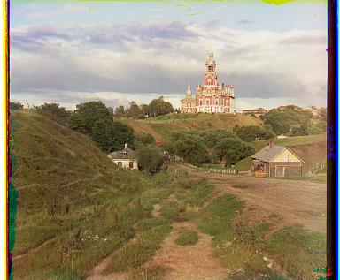
Cathedral.jpg - Green offset: (5, 2), Red offset: (12, 3)
|
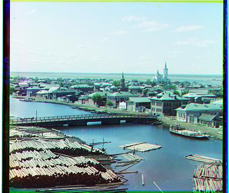
Tobolsk.jpg - Green offset: (3, 2), Red offset: (6, 3)
|
|
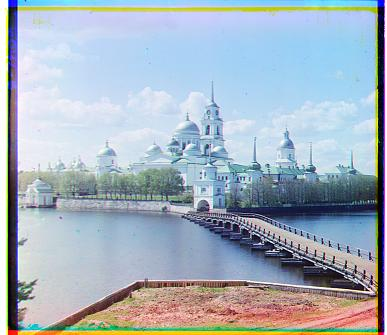
Monastery.jpg - Green offset: (3, 2), Red offset: (6, 3)
|
Signle-Scale Alignment Approach
The single-scale alignment function find_best_offset performs an exhaustive search to find the
optimal offset between two image channels. I used the blue channel as reference, and match the green and red channel
to it by shifting the optimal amount.
-
implementation:
- Exhaustive testing: Evaluates all possible combinations of horizontal and vertical shifts (dx, dy) within a search_range centered around an initial guess which is set to (0,0)
- Metric optimization: Use the passed in
filter_functo measure alignment quality - Edge Handling: Crop
search_range + 5from a edges to eliminate the wrapping artifact resulted fromnp.roll
L2 Result for Multi-Scale

Cathedral.jpg - Green offset: (5, 2), Red offset: (12, 3)
|
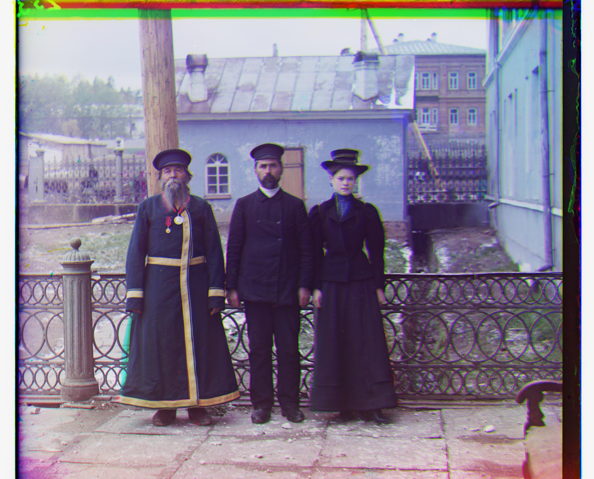
Three_generation.tif - Green offset: (52, 5), Red offset: (110, 7)
|
|
Tobolsk.jpg - Green offset: (3, 2), Red offset: (6, 3)
|
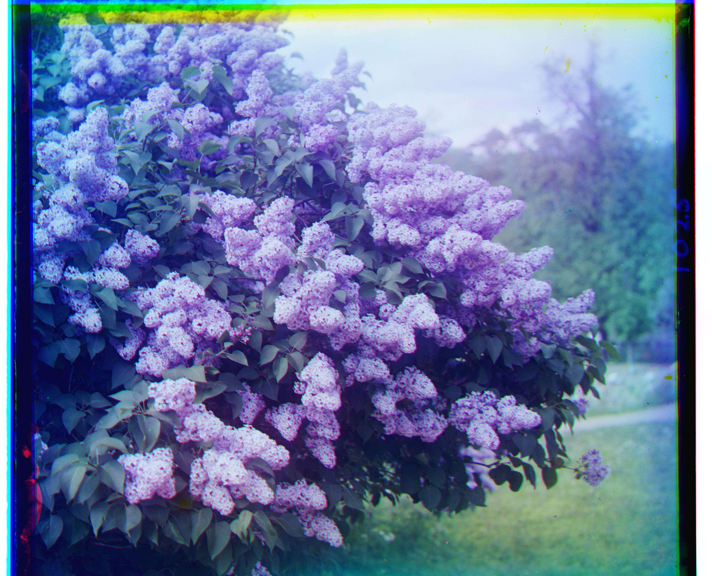
Siren.tif - Green offset: (48, -8), Red offset: (96, -24)
|
|
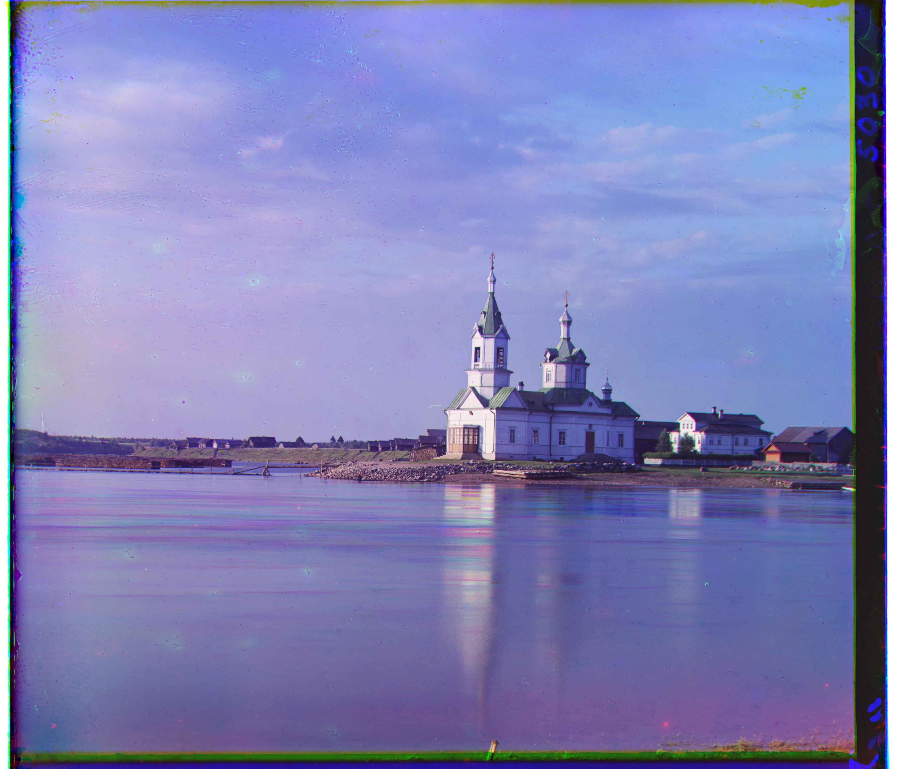
Church.tif - Green offset: (25, -2), Red offset: (61, -14)
|
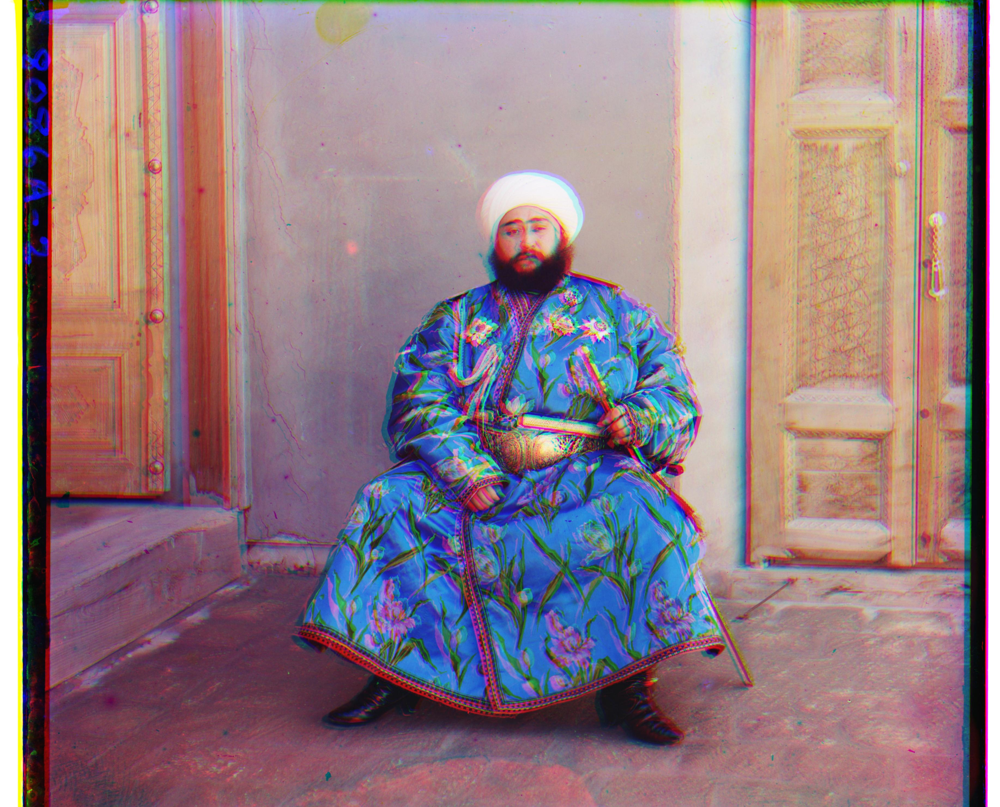
Emir.tif - Green offset: (36, 17), Red offset: (107, -24)
|
|
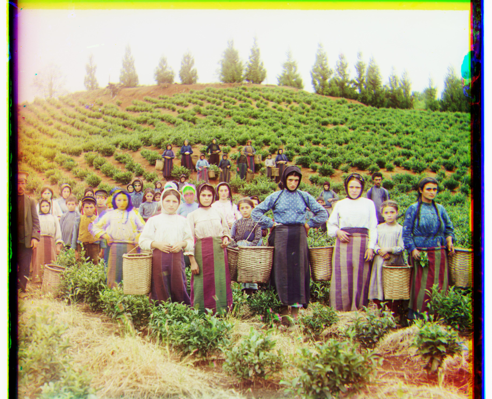
Harvesters.tif - Green offset: (57, 16), Red offset: (123, 13)
|
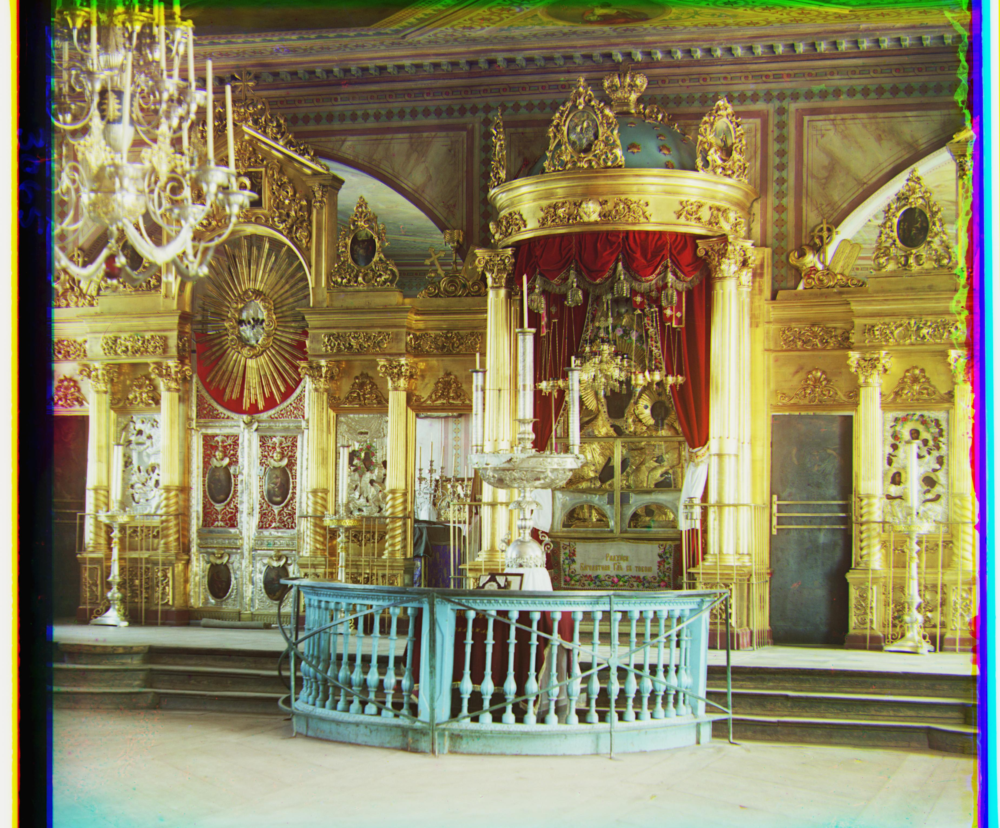
Icon.tif - Green offset: (40, 15), Red offset: (90, 23)
|
|
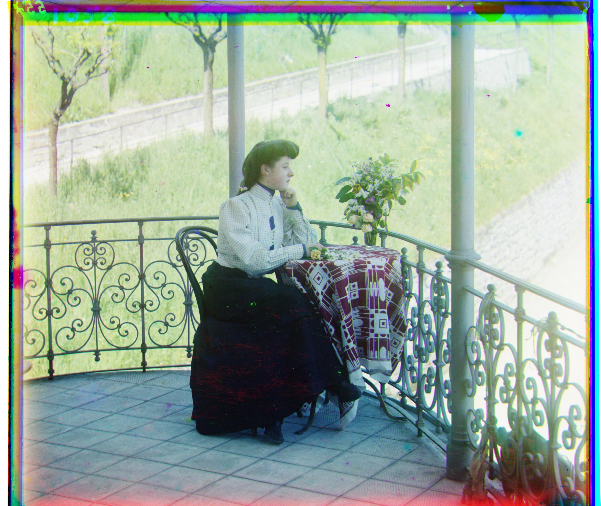
Italil.tif - Green offset: (39, 22), Red offset: (79, 36)
|
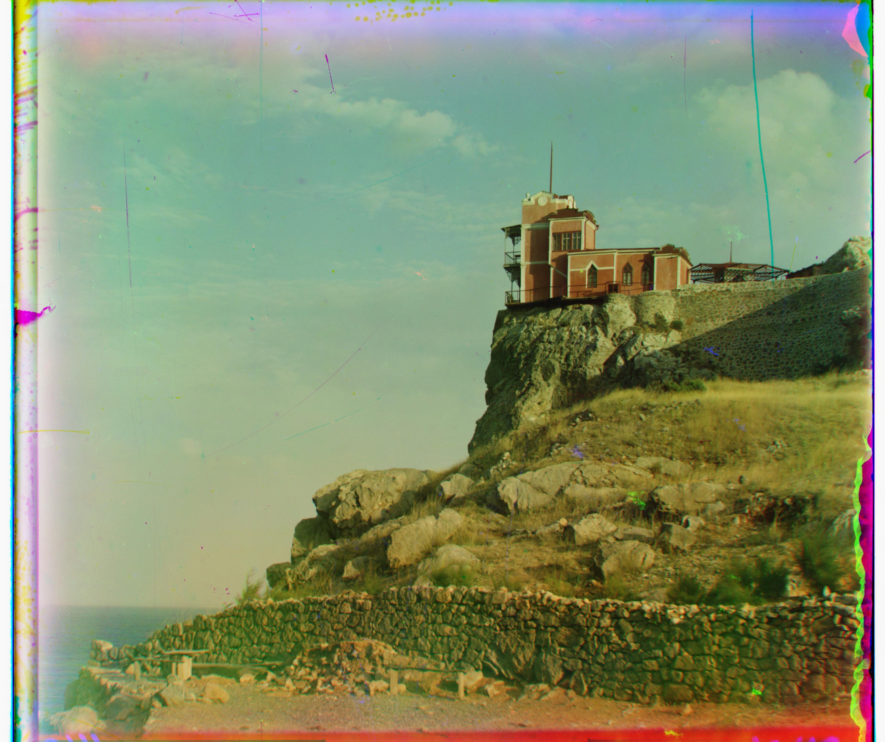
Lastochikino.tif - Green offset: (-3, -3), Red offset: (74, -8)
|
|
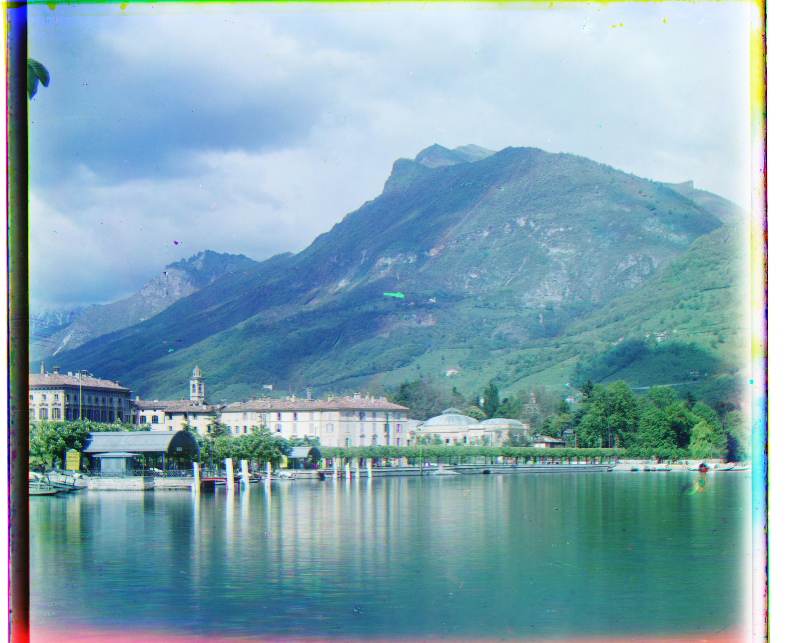
Lugano.tif - Green offset: (41, -11), Red offset: (93, -20)
|
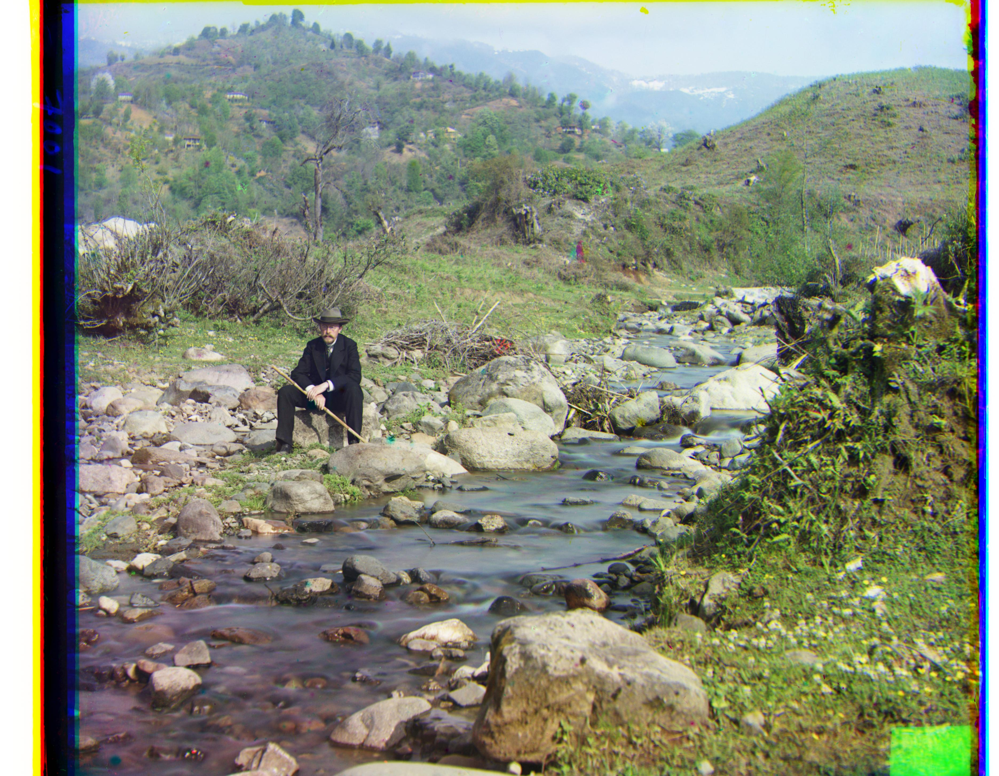
Self_portrait.tif - Green offset: (76, 25), Red offset: (173, 34)
|
|
Monastery.jpg - Green offset: (3, 2), Red offset: (6, 3)
|
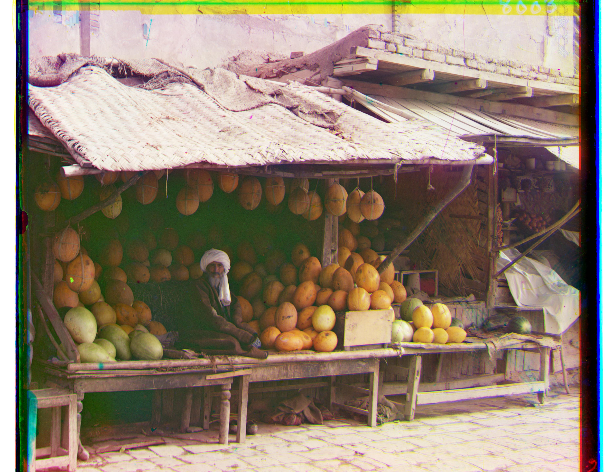
Melons.tif - Green offset: (78, 5), Red offset: (176, 10)
|
Algorithm Comparison
Multi-Scale Implemntaion
-
Image Pyramid: A multi-scale pyramid approach
find_best_offset_pyramidto handle large displacements efficiently.- Process image from low to high resolution through a coarse-to-fine strategy on the image pyramid.
- Caculate the optimal pyramid level using
max(3, int(np.log2(min_size / 100)) + 1) - Downsample the image by appling Gaussian blurring with 3×3 kernel and subsample by a factor of 2 to prevent aliasing
- Repeat the previous process to create a image prymaid where each level representing the image at half the resolution
- Use bottom up alignment strategy, finds the optimal offset at the lowest resolution first, and refines the offset estimate at higher resolution using a smaller refinement window(2/3 pixels).
-
Channel Alignment:
- Call the
find_best_offset_pyramidfor both red and green channel, and shift each channel by the corresponding amount - Identifies the largest horizontal and vertical offsets across both channels to determine the cropping boundary
- After cropping, assemble the aligned image by stacking and convert back to the original data type
- Call the
-
Metrics Comparison
- L1: Has the most consistent performance and highest accuracy across the majority of test images
- L2: Showed some inconsistent performance that varied across different images. Especially failed on the Emir photo, which might due to the squared term excessively penalized the high-contrast patterns in the traditional clothing, causing the algorithm be distracted by alignment-irrelevant pattern mismatches.
- Edge SSD: Similar to L2, Edge SSD also showed some inconsitency varied across images. It failed on the Harvesters photo, which might due to the agricultural scene contained many edges from plants, people, landscape etc, which lacked a distinct silhouettes or strong structural features, causing the edge-based metric to struggle with finding meaningful alignment cues.
Challenges and Solutions
During the implementation, several challenges were encountered:
- Cropping:
- In the
find_best_offsetfunction, we usenp.rollfor pixel shifting, which circularly wraps shifted pixels from one edge of the image to the opposite edge. These wrapped pixels do not correspond to the meaningful content and would inflate the similarity metric score. Sometimes resulting the correct alignment offset to appear worse due to these unrelated pixel comparisons. To resolve this, I need to crop the image edges where wrapping occurs before computing the similarity metric, so the metric scores are calculated from the valid region .
- In the
-
Search window offset:
- In inside the
find_best_offset_pyramidfunction, when determining the search_range to pass in for the next recursive call (one level down). I initially usesearch_range//2which reduces the range logarithmically, resulting a small search window in the lowest level and unable to find the desired offset, hence I usedmax(3, ..)to ensure we still search a reasonable minimum range. (The min value also have a effect on the accuracy of the alignment) - Also within the
find_best_offset_pyramid, I initially made the refinement window too large using a range_offset thats proportional to the search_range, resulting unneccesary checking and slow runtime. As a result, I keep the range_offset constant.
- In inside the
- Exposure differences: Some channels had different exposure levels, making alignment difficult. Therefore I normalized the channels before processing to yield better metric score
- Balance between Accuracy and Computational complexity: For example determine the min value for the refinement window, if the value is too high, it takes longer to run